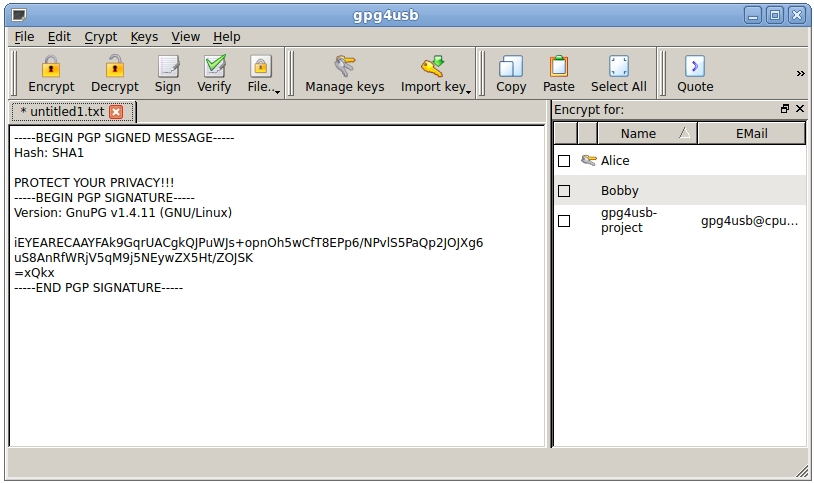
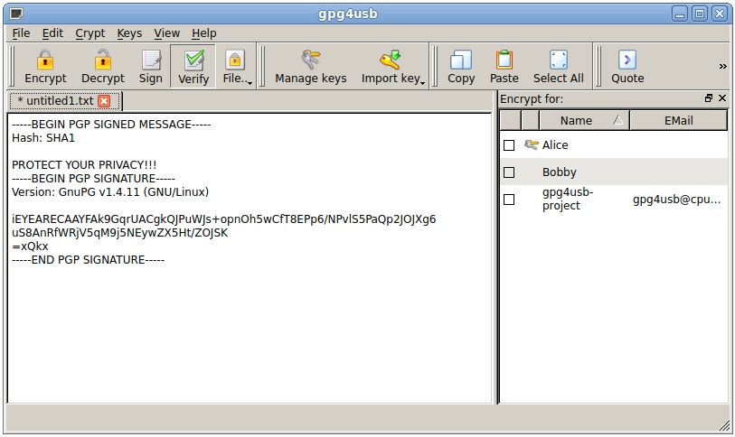
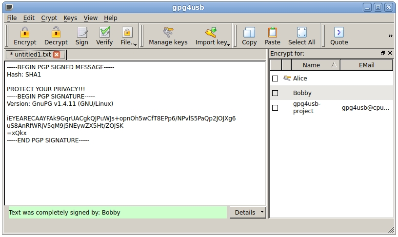
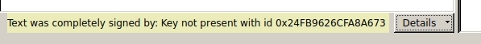
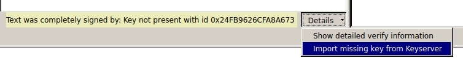

Howto verify a message
There are three steps to verify a message. We assume, that Alice wants to verify a signed message.
STEP 1: Copy the text to the textedit-field
First Alice copies the text to the textedit-field.

STEP 2: Click verify
Secondly she clicks on the verify button.

STEP 3: Read verify message
Now Alice reads the verify information shown at the bottom a the tab. To get more detailed information, she can click the details button in the verify messagebox and then choose .

NOTE: If the key is not present in your keylist, then the signers keyid is shown.

If the key is not present, you can try to import the key from the default keyserver (which you can set in the settings dialog).
